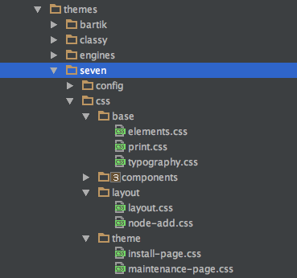
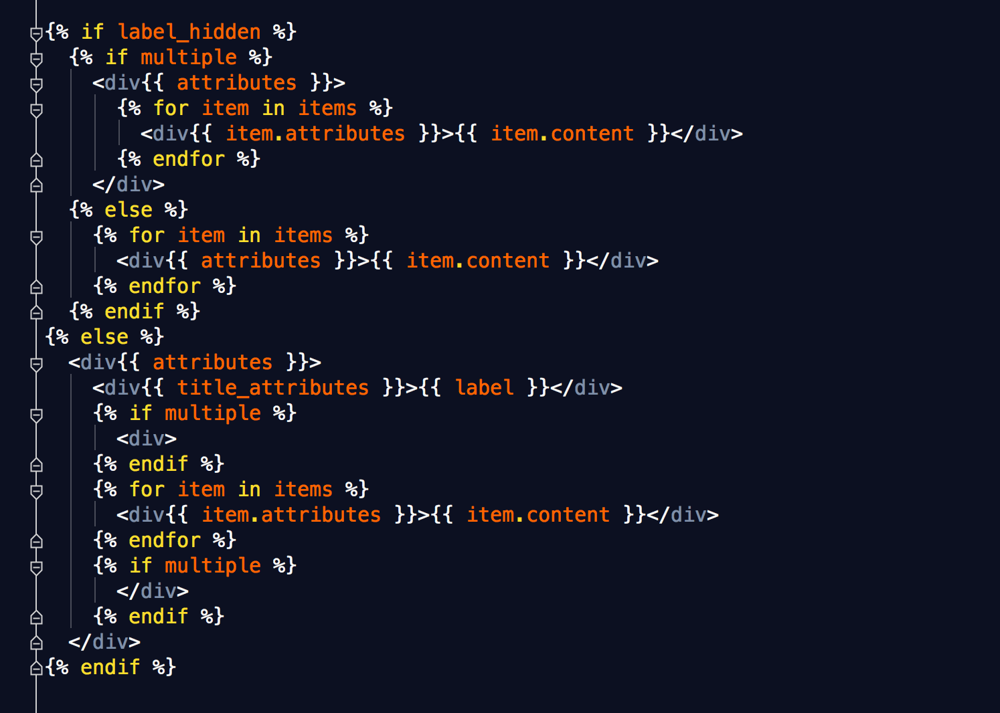
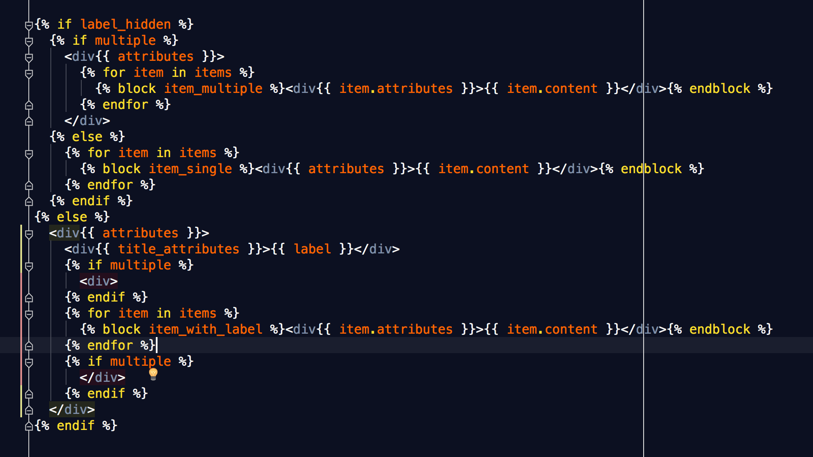
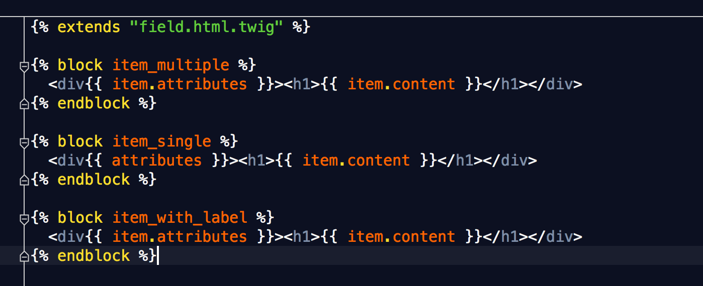

Chasing The Dream of Style Guide Driven Development in Drupal 8
Brian Perry
HS2 Solutions
Brian Perry
@bricomedy / brianperry
http://www.hs2solutions.com/
Slides:
http://brianperryinteractive.com/testing-d8-theme
Example Repo:
https://github.com/backlineint/testing-d8-theme
So what exactly is Style Guide Driven Development anyway?
Decoupling of front and back end development
Theming doesn't have to come last
Perception
Reality
(Mario Kart Version)
The Living Style Guide
A Living Style Guide
- Is modular and re-usable
A Living Style Guide
- Is modular and re-usable
- Uses real world css and markup
- Is always kept up to date
- Is testable
Has this ever happened to you?

One tiny css change causes a regression deep in the outer reaches of your site
(and, it goes unnoticed for lord knows how long)
Get to the Drupal Already...
Drupal 8 wants you to build better themes
Cleaner Markup
Base Themes
- Classy
- Stable
Clearer seperation between logic and display
{%
set classes = [
'block',
'block-' ~ configuration.provider|clean_class,
'block-' ~ plugin_id|clean_class,
]
%}
< div {{ attributes.addClass(classes) }}>
(From block.html.twig)
{% if attributes.hasClass('myClass') %}
{# do stuff #}
{% endif %}
Tools to Create Modular, Re-usable components
CSS Coding Standards
SMACSS
- Base
- Layout
- Component (aka Module)
- State
- Theme (aka Skin)
BEM
Naming convention for components
- Block
- Element
- Modifier
.block {}
.block__element {}
.block--modifier {}
.block__element--modifier {}
Twig Include
links--node.html.twig (classy)
{% if links %}
{% include "links.html.twig" %}
{% endif %}
links.html.twig (classy)
{% if links -%}
{%- if heading -%}
{%- if heading.level -%}
<{{ heading.level }}{{ heading.attributes }}>{{ heading.text }}
{%- else -%}
{{ heading.text }}
{%- endif -%}
{%- endif -%}
{%- for item in links -%}
{%- if item.link -%}
{{ item.link }}
{%- elseif item.text_attributes -%}
{{ item.text }}
{%- else -%}
{{ item.text }}
{%- endif -%}
{%- endfor -%}
{%- endif %}
Twig Extends
field.html.twig
Twig Blocks
Custom field.html.twig
Twig Extends
field--field-hero-header.html.twig
Twig Embed
Combines Include and Extends
{% embed "teasers_skeleton.twig" %}
{# These blocks are defined in "teasers_skeleton.twig" #}
{# and we override them right here: #}
{% block left_teaser %}
Some content for the left teaser box
{% endblock %}
{% block right_teaser %}
Some content for the right teaser box
{% endblock %}
{% endembed %}
attach_library()
Can now add libraries within twig templates
{{ attach_library('contextual/drupal.contextual-links') }}
Some markup {{ message }}
Careful - can impact aggregation / performance
Creating Your Style Guide
Style Guide D8 Alpha Available
https://www.drupal.org/project/styleguide
Style Guide Generators
Many options
- Pattern Lab
- Hologram
- KSS
KSS
- Human readable documentation syntax
- Any flavor of CSS
- Node JS implementation
- Plays nicely with Grunt and Gulp
Install
npm install kss --save-dev
npm install grunt-kss --save-dev
Example

KSS Syntax
// Cards
//
// Multiple cards included in a grid
//
// Markup: cards.twig
//
// Style Guide: Patterns.Cards
.cards {
display: flex;
flex-wrap: wrap;
justify-content: space-between;
}
Build Style Guide
grunt kss
or:
kss-node --source sass --destination styleguide --css ../css/style.css --builder=builder/twig

Testing Your Style Guide and Theme
Behat
Behavior Driven Development Framework
@javascript
Scenario: Footer style matches style guide
Given I am an anonymous user
And I am on "assessments/practice-assessments"
When I am browsing using a "phone"
Then "body" should have a "background-color" css value of "rgb(112, 84, 125)"
And "#page" should have a "background-color" css value of "rgb(255, 255, 255)"
And "footer" should have a "padding-top" css value of "50px"
And "footer" should have a "padding-bottom" css value of "30px"
View Gist for detail of steps

Wraith
Screenshot Comparison Tool
- Compares two URLs
- Simple configuration
- Typically 'all or nothing' diffs
WebdriverIO
Selenium Bindings for NodeJS

- Selenium - Browser Automation
- WebdriverIO - Node library to drive selenium
- WebdriverCSS - CSS Regression Testing
Strengths: interactivity, easier to target components.
Install
npm install webdriverio@3.4.0 webdrivercss@2.0.0beta-rc1 selenium-standalone --save-dev
./node-modules/.bin/selenium-standalone install
Also requires graphicsmagick
Creating a Test
wdio-tests.js
var wdio = require("webdriverio");
var webdrivercss = require("webdrivercss");
var assert = require("assert");
var options = {
desiredCapabilities: {
browserName: "chrome"
}
}
var browser = wdio.remote(options);
webdrivercss.init(browser, {
screenshotRoot: "screenshots"
});
function assertShots (err, shots) {
assert.ifError(err);
Object.keys(shots).forEach(function(element) {
shots[element].forEach(function(shot) {
assert.ok(shot.isWithinMisMatchTolerance, shot.message);
})
});
};
browser
.init()
.url("http://testing-d8-theme.dd:8083/cards")
.webdrivercss("cards", [
{
name: "cards",
elem: ".cards"
}
], assertShots)
.end();
Some simple interactivity
browser
.init()
.url(config.url)
.click(".fa-bars")
.webdrivercss("navigation", [
{
name: "Off Canvas Menu",
elem: ".sidebar-offcanvas"
}
], assertShots)
.end();
Chasing the dream?
Still Chasing...
- My workflow - tools continue to evolve
- Drupal and Style Guide Sharing Markup
- Component Based Rendering in Drupal
* Requires Components Module *

The Style Guide Component
card.twig
 {{ header }}
{{ header }}
{{ copy }}
The Drupal Template (Presenter)
node--article--card.twig
{% include "@components/card/card.twig"
with {
"img_src": file_url(node.field_image.entity.fileuri),
"img_alt": content.field_image.0['#item'].alt,
"header": label,
"copy": content.body
}
%}